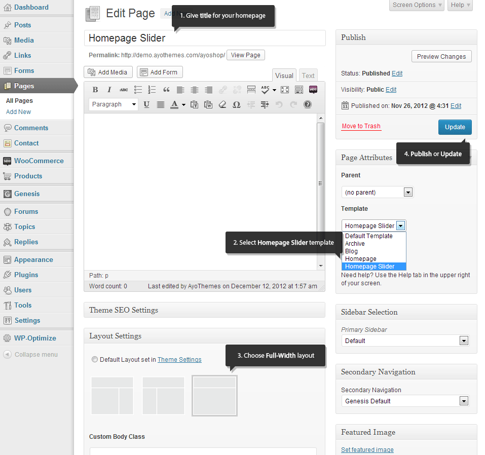
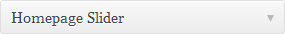
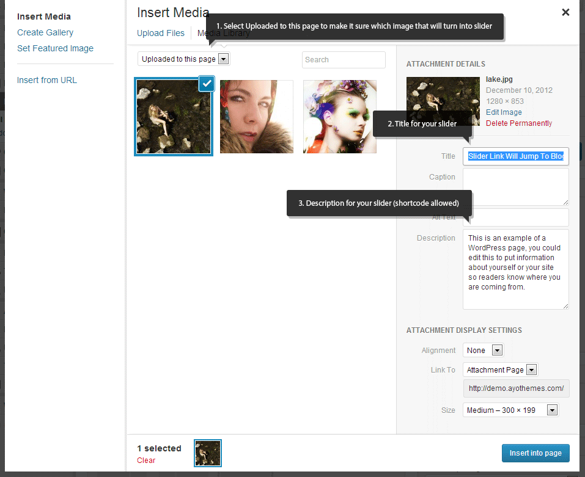
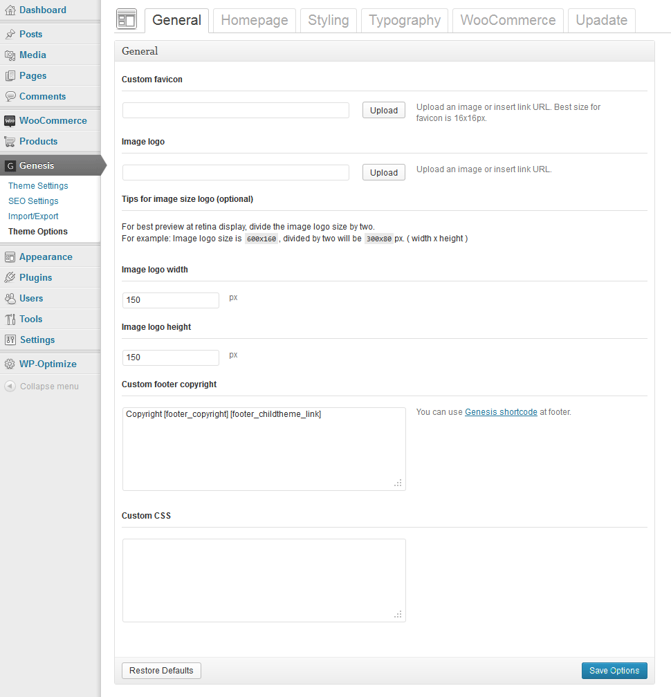
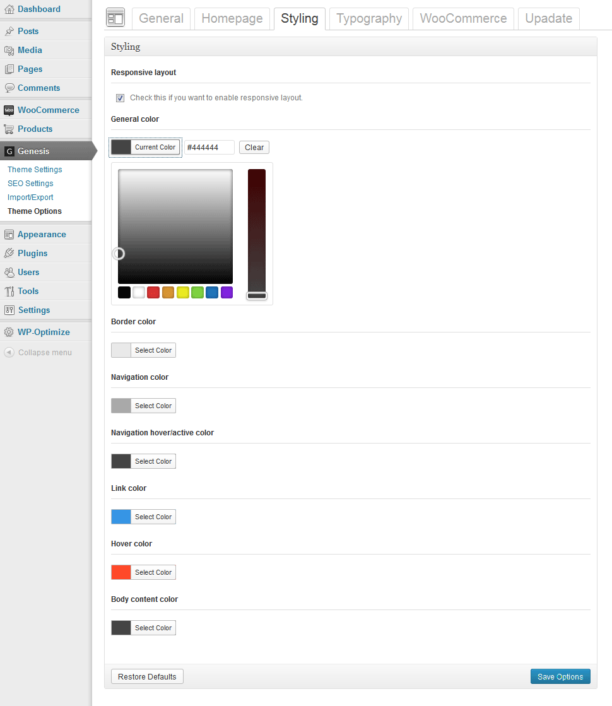
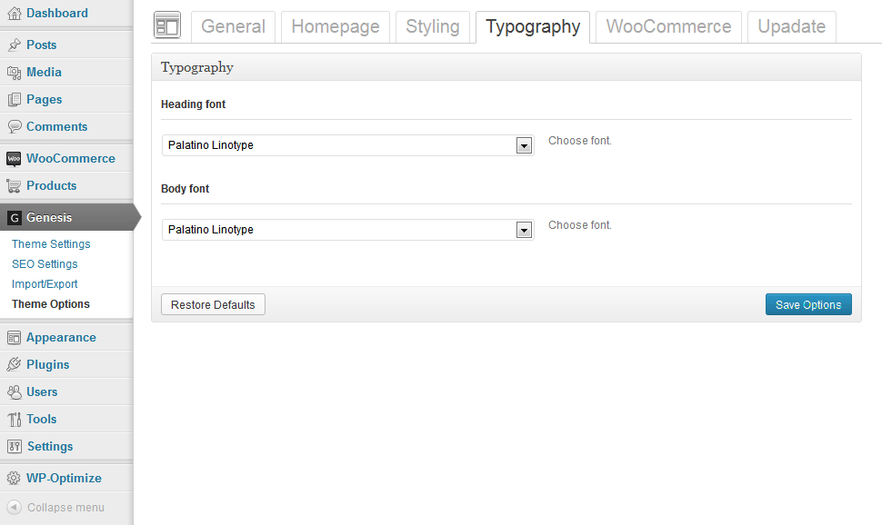
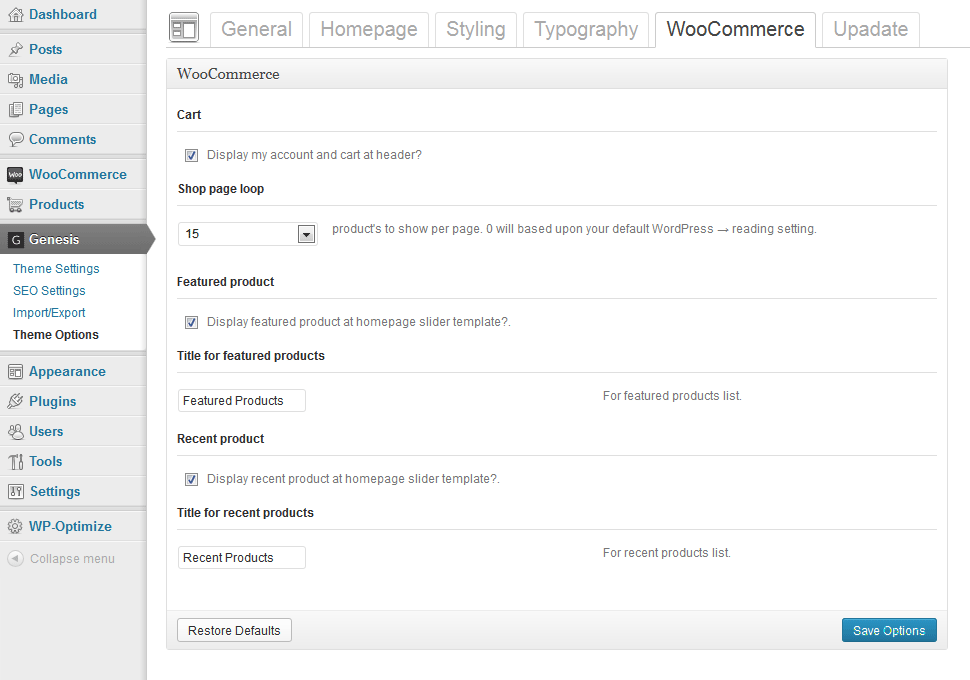
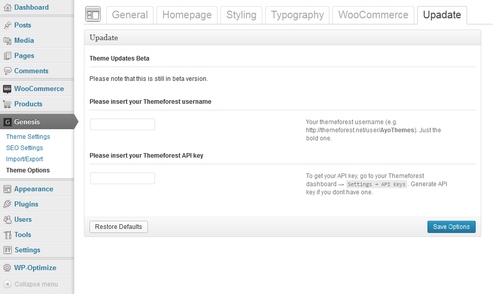

Intro
First of all, thank you so much if you have already downloaded Ayo Shop - A Clean and Responsive eCommerce Child Theme.
Just for a quick note! This documentation only covers all features and how to use Ayo Shop Child theme. So, if you are new about WordPress and Genesis Framework, we recommend you to download and read Genesis for Absolute Beginer by StudioPress. The PDF almost covers all information to get started with WordPress and Genesis Framework.
You can also read the documentation about AyoShop Child Theme online, just to make sure that it's up to date.
1. Getting started
AyoShop Child Theme minimum requirements:
- WordPress 3.4+
- Genesis Framework version 1.8+
2. Setting Up Homepage
By default, AyoShop child theme homepage is a blog page or list of posts. To setup a homepage just like at the demo page, just Add New or edit WordPress page (Admin Dashboard → Pages → New Page). Step by step to setup homepage:
- Give title for your page (e.g. homepage, home, front page etc).
- At the Page Attributes → Template, choose Homepage Slider template.
- At Genesis Layout Settings, choose full-width (recommended).
- Publish.

{kind=link}
Setting up slider for Homepage Slider template.
- Click add media button at the page.
- Drag and drop images from your computer. Any attachments that is linked on this page will be turned into slider.
- You can Add *Title and Description for each image. Shortcode is allowed in this field.
- Drag and drop the attachment images order. (Optional)
- After you're done, click Update.
- If you want to use a third-party slider, you can add any shortcodes or widgets at Homepage Slider Widget Area (Appeareance → Widgets → Homepage Slider). . Any active widget in this area will disable AyoShop built-in slider.
* Required
{kind=link}
Now lets go to Settings → Reading.
- At Front page displays choose a static page.
- At Front Page selection, choose the page that we just created for Homepage.
- At Posts page selection, choose blog page (optional).
{kind=link}
The differences between Homepage template and Homepage Slider template
Homepage template is just a blank page that will not display anything beside the content. This template is used for Aqua Page Builder plugin or other page builder plugins.
Homepage Slider template has a built-in contents which include slider, widgets area, featured products and recent products. The image below illustrates how the structure looks like:

3. Sidebar and Widgets
Sidebar Area
- Header Right
- Primary Sidebar
- Homepage Slider (only shows at Homepage Slider Template)
- Homepage Widget Area (only shows at Homepage Slider Template)
- Footer Widget Area (Will show below footer copyright)
- Footer 1, Footer 2, Footer 3 and Footer 4
If the Genesis Simple Sidebars plugin is activated, you will have the ability to manage Primary sidebar area, either per post, per page, or per tag/category archive basis.
Custom Widgets
- All Genesis built-in widgets
- Ayo - text icon (Display icon before widget title)
4. Setting Up WooCommerce
In order to turn your website into eCommerce with WooCommerce, you need to have the following that are listed below Installed and Activated:
- WordPress 3.4+
- Genesis Framework version 1.8+ Installed
- AyoShop child theme for Genesis Framework Activated
- WooCommerce, minimum version 1.6.0 Activated
- Genesis Connect for WooCommerce Activated
- Genesis Simple Menus Optional
- Genesis Simple Sidebars Optional
You can learn more about how to setup your shop with WooCommerce at their documentation page.
After you activate WooCommerce, please go to WooCommerce → Settings → Catalog → Image Options. And change the followings:
- Catalog Images width: 380px | height: 380px or 480px | Hard crop: check
- Single Product Image: width: 600px | height: 600px | Hard crop: check or uncheck
- Product Thumbnails: width: 180px | height: 180px | Hard crop: check
Optional : Use Regenerate thumbnails or Force Regenerate Thumbnails plugin if there are images which are already stored before you save WooCommerce Image Options.
5. Child Theme Options and Settings
General Settings
{kind=link}
Homepage Settings

Styling Settings
{kind=link}
Typography Settings
{kind=link}
WooCommerce Settings
{kind=link}
Update Settings
{kind=link}
6. WordPress Customizer
New WordPress Customizer featured already inlcuded on this child theme.
{kind=link}
{kind=link}
{kind=link}
{kind=link}
7. Shortcode
There is only one schortcode in this child theme and that is only to display Font Awesome icon. To use the shorcode will be explained below:
To use the shortcode: [icon]
To change icon type: [icon type="icon-display"]
Full parameter: [icon type="icon-display" color="#444444" size="24px"]
If you want more shortcodes, just take a look at plugins section for reference.
8. Plugins
These are the lists of plugins that we already tested with AyoShop child theme.
List of plugins that support Ayo shop child theme:
- WooCommerce
- Genesis Connect WooCommerce
- bbPress (min version 2.1+)
- bbPress Genesis Extend
- Genesis Simple Sidebars
- Genesis Simple Menus
Recommended Plugins:
- Genesis Toolbar Extras
- Zilla Plugins
- Aqua Page Builder
- Symple Shorcode
- Contact Form 7
- W3 Total Cache or Wp Super Cache
Commercial Plugins:
More recommendations will come.
9. Translation and Localization
Localization files .po and .mo for translation are already included at AyoShop Child theme.
Translating WordPress
- Visit WordPress in your language.
- Download language files .po and .mo that you want and use it at your WordPress installation ( wp-content → languages ). If the language folder does not exist, just create it.
- Open wp-config.php and give the ID of your language.
define('WPLANG', 'LANGUAGE ID'). Take a look at http://codex.wordpress.org/WordPress_in_Your_Language to find out the ID of each language.
Translating Genesis Framework
- Install and activate Genesis Translations plugin.
Translating Genesis Child Theme
- Download and Install Poedit.
- Open ayoshop.po file with Poedit.
- Translate the source text at translation box.
- Save the file and give the file name depending on your language ID. File → Save As → Language ID. (e.g. de_DE, fr_FR, etc). Poedit will automaticly generate .mo file.
This video will explain how to translate Gensis Child theme:
10. Demo Data (xml)
There are two version of sample data.
- ayoshop.xml : All contents + WooCommerce content.
- ayo-non-shop.xml : All contents without WooCommerce content.
*If you import ayoshop.xml while WooCommerce not activated, the import process will not work as expected.
11. Source and Credits
We've used the following images, icons, fonts or other files as listed below.
Scripts and libraries:
- jQuery by John Resig
- Respond.js by Scott Jehl
- Selectivizr by Keith Clark
- Fitvidsjs by Chris Coyier and Dave Rupert
- Mobile Menu by Arif a.k. mambows
- Flexslider by Woothemes
- Options Framework Theme by Davin Says
Images, Icon and Font:
12. Changelog
Version 1.1
1. Update Screenshot v1.1 2. Update Options Framework Theme into v1.4 - ayoshop/lib/admin/ 3. Add autoupdate theme feature (beta) 4. Add bbPress compatibility - ayoshop/lib/functions/theme-bbpress.php 5. Conditional statement for bbPress - ayoshop/lib/functions/theme-tweaks.php 6. Update translation - ayoshop/languages/ 7. Fix plural and singular for translation - ayoshop/lib/functions/theme-woocommerce.php 8. Remove unncessary array - ayoshop/lib/functions/theme-functions.php 9. Update stylesheet for main style 10. Update stylesheet for responsive style 11. Add stylesheet Contact form 7 12. Add stylesheet for bbPress - ayoshop/lib/css/ayo-bbpress.css 13. Separate files so it will be more manageable for future development. 14. Fix some minor bugs 15. HTML5 Docktype to make it compatible with WooCommerce. 16. Prepare for Genesis 1.9
Version 1.0
1. Initial Release
Outro
Once again, thank you so much if you have already downloaded the Ayo Shop child theme.
- AyoThemes & Designmodo